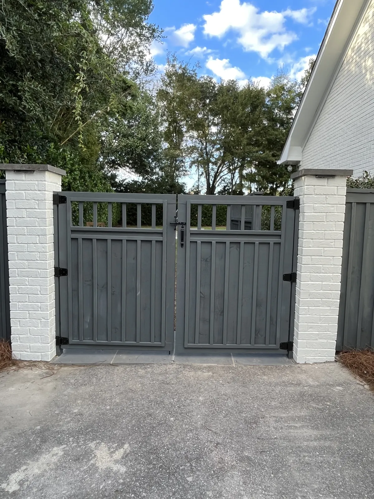

Outdoor Living Space Ideas for Charleston Backyards
These are real outdoor living spaces built by Cramer's Landscaping for homeowners across Charleston, not stock inspiration photos. Each project below reflects what actually holds up and gets used in a Lowcountry backyard, organized by feature so you can jump to whichever part of your own project you're still deciding on. Rather than just showing pictures, we're including the reasoning behind each choice, since the "why" behind a design decision usually matters more than the photo itself when you're planning your own space.
Outdoor Kitchen Builds

A built-in kitchen with a gas grill, granite countertop, and storage cabinetry, designed for weekend cookouts and everyday family dinners outside. The layout keeps the cook facing the rest of the yard rather than a wall, so the space stays social during use.
Close-up on countertop and appliance layout. Granite and quartzite hold up best against Charleston's sun and humidity without staining or degrading over time, which is why we steer most clients toward one of the two regardless of overall budget.
An outdoor kitchen built underneath a pergola, keeping the cooking area shaded during the hottest part of the day while still allowing airflow to clear smoke and heat.
A smaller-footprint kitchen built for a homeowner who wanted grilling capability without dedicating a large portion of the yard to it. A compact layout with a built-in grill and a modest counter run proves a full outdoor kitchen doesn't require a sprawling patio to work well.
A kitchen extended with a bar-height counter and stool seating, giving guests a place to sit and talk with whoever is cooking rather than clustering elsewhere in the yard during a gathering.
Kitchens like these come together most successfully when the homeowner has already thought through how often they'll actually cook outside versus how much they want the space to double as a gathering point. See more on our outdoor kitchens page.
Fireplace and Fire Feature Builds
A custom stone fireplace anchoring a lounge area, extending backyard use well into the fall and winter months and giving the space a natural focal point the way a living room fireplace does indoors.
A built-in fire pit with seating walls, positioned as the gathering point for a larger patio and pergola project. Seating walls double as extra gathering space during larger get-togethers without needing to haul out extra furniture.
A fireplace project that includes built-in wood storage on either side, keeping firewood dry and accessible without needing a separate rack or shed nearby.
A fire pit intentionally placed outside the footprint of the pergola or pavilion, since open flame and covered wood or fabric structures don't mix well. This is a placement detail that's easy to overlook during early planning and expensive to fix after construction.
Fire features tend to be the part of an outdoor living space that gets the most emotional attachment from homeowners, since they turn the yard into somewhere people want to be after dark, not just during the day.
Pergola and Pavilion Builds

Our newest pool pavilion project, built with a fully covered roof to provide shade and rain protection poolside, all year long. The covered structure means the space stays usable even during Charleston's frequent summer afternoon storms.
An open cedar pergola providing partial shade over a dining patio, built to support climbing vines over time. Cedar holds up well against humidity while giving the structure a warmer, more natural look than pressure-treated wood.
A custom aluminum pergola over a lounge and seating area, chosen for its low maintenance and long-term durability in a coastal climate where wood requires more upkeep.
A fully covered pavilion built specifically to house an outdoor kitchen, keeping appliances protected from rain year round rather than relying on covers between uses.
A pergola built with wiring run through the structure itself for string lighting, planned during construction rather than added afterward, which is why the wiring stays hidden instead of running along the surface.
See the full range in our pergola and pavilion gallery or explore custom pergola and outdoor structures options.
Patio and Walkway Builds
A stepping stone walkway connecting the side of the home to the backyard living space, set into newly graded lawn. Stepping stones give a more casual, garden feel compared to a poured concrete path while still solving the drainage and mud problem a plain grass path creates.
A paver patio split into a dining zone and a separate lounge zone, connected by a clear walking path. Defining the zones with material changes and layout, rather than leaving one open slab, is what makes a space feel like separate outdoor rooms instead of one undefined area.
A stamped concrete patio extending into a pool deck, chosen for its slip resistance and lower cost compared to natural stone while still giving a finished, textured look.
A natural stone patio built for a historic downtown property, chosen specifically to complement the home's existing architecture rather than introducing a modern material that would clash with the setting.
A patio built on a sloped lot, using a low retaining wall to create a level surface rather than leaving the space uneven or eroding over time.
Looking for more layout inspiration? Check out our backyard design ideas post for additional planning tips, or see how these features come together as one connected project on our outdoor living spaces page.
Lighting and Finishing Details

Low-voltage pathway lighting installed along a stepping stone walkway, added for safety as much as ambiance, since uneven ground is far harder to navigate after dark without it.
Architectural uplighting on a mature oak, a detail that costs relatively little compared to the rest of a project but changes how the whole yard feels at night.
Lighting is easy to treat as an afterthought, but the projects that feel most finished are almost always the ones where lighting was planned alongside the hardscape and structures rather than bolted on at the very end. See our landscape lighting page for more on how this gets planned into a project from the start.
How to Use This Gallery to Plan Your Own Project
The most useful way to go through a gallery like this isn't to pick one photo and try to recreate it exactly. It's to notice which specific elements keep catching your attention across different projects. If you find yourself drawn to every photo with a covered structure, that's a signal that weather protection matters more to you than open-air shade. If the fire feature photos are what you keep coming back to, that tells us your space should be planned around extending the season rather than maximizing daytime cooking space. Bring these reactions to your consultation. They're often more useful than a Pinterest board of disconnected inspiration photos, since they point to what you actually want the space to do rather than just how you want it to look.
Seasonal Considerations for Charleston Backyards

A few of the choices above are shaped directly by Charleston's climate, and it's worth understanding why before you fall in love with a specific look from a different region. Open structures work well here because the goal in summer is usually shade and airflow, not blocking a breeze the way you might in a colder or windier climate. Covered pavilions matter more here than in drier regions because of how often afternoon storms roll through during the warmer months, and a space that goes unused every time it rains doesn't deliver the value its cost would suggest. Material choices throughout this gallery, from granite countertops to cedar and aluminum structures, all reflect what actually survives a Lowcountry summer rather than what looks good in a photo taken somewhere with a milder, drier climate.
Small Yard Solutions
A combined patio and pergola project built for a smaller downtown lot, proving that a full outdoor living space doesn't require a large property to work. Careful zone planning matters more on a small lot than a large one, since there's less room to correct an awkward layout after the fact.
A narrow side yard turned into a usable transitional space with vertical planting and a simple paver path, showing how even a yard's less obvious areas can be brought into the overall design.
A single patio slab designed with furniture zones that can shift between a dining setup and a lounge setup depending on the occasion, a practical solution for properties where space doesn't allow for permanently separate zones.
Poolside Outdoor Living

A poolside pavilion providing shaded seating steps away from the water, giving swimmers and guests a place to cool off out of direct sun without leaving the pool area entirely.
A concrete pool deck paired with a nearby fire feature, extending pool season into cooler evenings when the water itself may be too cold to swim in but the surrounding space still gets used.
An outdoor kitchen positioned close to the pool, minimizing the distance between cooking, dining, and swimming during a typical pool day.
Landscape and Planting Details
Planting beds installed around the perimeter of a new patio, softening the hardscape edges and tying the new construction into the rest of the existing yard rather than leaving it looking like a disconnected addition.
Salt-tolerant, humidity-appropriate plantings surrounding an outdoor kitchen area, chosen specifically to hold up against the coastal conditions that can stress less appropriate plant choices.
Well-chosen plantings finish an outdoor living project the way trim work finishes a room indoors. A hardscape and structure project without any attention to the surrounding landscape tends to look unfinished even when the construction itself is done well.
Before Committing: What to Look for in Your Own Yard
Before pulling ideas from this gallery, it's worth walking your own yard with a few practical questions in mind. Where does water currently pool after a heavy rain? That spot needs grading or drainage work before anything gets built there, regardless of how good it looks in a photo from a different property. Which direction does the space face, and how much direct sun does it get during the hottest part of the day? This affects whether an open pergola will provide enough relief or whether a fully covered structure makes more sense. How close is the space to existing utility connections in the house, since that affects both the feasibility and cost of an outdoor kitchen. Answering these questions before your consultation makes the design conversation more productive, since you'll already have a sense of what your specific property allows for and what it doesn't.
How These Projects Age Over Time
One thing photos alone can't show is how a project holds up years after it's finished, and that's often the more important question when you're drawing inspiration from a gallery. Natural stone and concrete hardscape, when installed with proper grading underneath, tends to look nearly identical five and ten years later, aside from the natural weathering that gives stone character over time. Wood structures require more attention. A cedar pergola that isn't resealed on a reasonable schedule will gray and weather faster than one that's maintained, though many homeowners actually prefer that aged look and choose not to reseal for that reason. Metal fixtures and hardware, especially in outdoor kitchens, benefit from occasional inspection since corrosion in a coastal climate tends to show up at connection points and fasteners well before it affects the main structure.
Asking a contractor directly how a specific project in a gallery has held up since it was completed is a reasonable question, and one we're happy to answer project by project during a consultation.
How Season Affects Which of These Ideas Fits Best
Some of these ideas shine in a particular season more than others, which is worth factoring in as you narrow down what fits your household. Fully covered pavilions and pergolas earn their keep most obviously in summer, when Charleston's direct sun and frequent afternoon storms make an unshaded, uncovered patio uncomfortable or unusable for stretches of the day. Fire features flip that pattern, becoming the centerpiece of the space once temperatures drop in fall and winter, turning what might otherwise be a dormant part of the yard into the most-used spot on a cool evening.
Outdoor kitchens tend to see fairly steady use across most of the year in this climate, though summer entertaining tends to lean toward lighter, faster meals while cooler months invite slower, more involved cooking outside. Lighting matters across every season but becomes especially valuable as days shorten heading into fall and winter, when a well-lit space extends usable hours in the evening far beyond what natural daylight alone would allow.
Thinking through which season your household spends the most time outside, and designing around that season's specific needs first, tends to produce a more satisfying result than designing evenly for all four seasons and ending up with a space that's only moderately well suited to any of them.
Matching Ideas to Different Property Types
Not every idea in this gallery fits every property equally well, and part of planning a successful project is matching the right features to your specific lot rather than starting with a feature list and forcing it onto the property afterward. A compact downtown lot tends to do best with a single, well-defined zone, often a combined kitchen and dining area, rather than trying to fit in a separate lounge zone that ends up feeling cramped. A larger suburban lot in Mount Pleasant or West Ashley has more room to support multiple distinct zones without feeling crowded, which is why some of the more expansive multi-zone layouts shown above tend to appear on these larger properties.
Waterfront or marsh-adjacent lots come with their own considerations around drainage and structure placement, sometimes requiring a retaining wall or additional grading work before the visible features can even begin. Sloped lots, common in parts of West Ashley and further inland, often benefit from a tiered design using retaining walls to create level zones at different elevations rather than one large, uniformly graded space. None of this is meant to talk you out of a particular feature you're drawn to. It's meant to set realistic expectations for how that feature will need to be adapted to fit your specific property, which is exactly the kind of detail a site consultation is built to work through.
Frequently Asked Questions
How do I know which of these ideas would work on my property?
The right features depend on your lot size, how much sun exposure the space gets, and how you want to use it. A design consultation walks through your specific property rather than trying to fit a generic layout onto it.
Can I combine ideas from multiple categories above into one project?
Yes, and most finished outdoor living spaces do exactly that. A single project might include a kitchen, a fire feature, a pergola, and a patio all working together, which is the approach covered on our outdoor living spaces hub page.
Are these materials and designs specific to Charleston, or would they work anywhere?
Many of the material choices shown here, like granite countertops, cedar and aluminum structures, and covered pavilions, are specifically suited to Charleston's humidity, heat, and rain. The same designs would need different material choices in a drier or colder climate.
How far in advance should I start planning if I want a project finished by a certain date?
Larger projects involving permitting, structural work, and a kitchen build should be planned several months ahead of a target date to account for design, approval, and construction time.
Ready to Plan Your Own Space?
Every project above started with a conversation about how the homeowner actually wanted to use their yard. Some wanted a space built around entertaining large groups, others wanted a quiet spot to unwind after work, and the finished projects look different because of it. Tell us about your space and we'll help you figure out what fits. Request a consultation to get started.
Planning a Project of Your Own?
See everything we design and build, or get in touch to talk through your ideas with Doug and Zach.